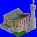
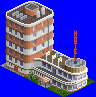
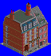

| The Total Town Replacement Set Version 3 |
| Foreword | Parameters and download | Update info | |
| Game time elapse and building appearence | |||
| Roads | Specials | Screenshots | Credits |
Foreword Version 3 of the TTRS ll not only be an update of version 2 but all so an extention and replenishment of buildings to the original game. Since the release of patch alpha 37 with the switch "newhouses" written by Csaboka, a lot of new possibilitys have emerged. One of them is that now new buildings, and i mean not replacements to old buildings, can be introduced. All so written by Csaboka is the "newindustrys" switch since patch alpha 55. This enables new types of industrys in the game, but all so a greater diversity of existing once like the Bank. For example, Banks can have construction sites and smaller building versions in town edges and out in the field. With this third version of the TTRS i ll try to create a living town with more diverse acceptation and generation of goods, passengers and mail and a very diverse appearence. What does it contain? Total Town Replacement Set v3 (TTRSv3 for short) is a building set for TTDPatch, for the temperate climate. It contains over 100 town buildings to break the monotony you get with default TTD town buildings. The buildings are separated into four "eras", 1920-1950, 1950-1980, 1980-2010 and 2010-forever. This means your towns will nicely evolve from old-style buildings towards modern buildings as time passes in the game. The set comes with some extras as well. The small and big airport graphics are replaced to make them fit to the buildings. There are two bank versions that replace the original bank and have different looks in the different eras. You also get two new road graphics, one used before 1970, and one used after that year. Everything except the bank can be turned off in case you want to use different graphics for these things, or simply prefer the original TTD ones. The set is compatible with the Extended Cargo Scheme project, thanks to George. When petrol is available in your game, towns will start building petrol stations that accept it. Similarly, when the "tourist" cargo is available, some of the buildings will start accepting and producing tourists. This set is, however, also fully functional without using ECS. GRF switches are added to make it possible to set TTRS to function the way you like, all parameter settings can be found in the Parameters and download section. |
||
Suggestions and commends can be made on the tt-forums. |
||
Release date: Friday 08 December 2006 1st update (v3.01) Wednesday 20 December 2006 2nd update (v3.02) Saturday 7 April 2007 3rd update (v3.02a) Monday 9 April 2007 |
||
| Building | 1920-1950 | 1950-1980 | 1980-2010 | 2010-2070 |
| Big Bank To appear in zone 3 and 4 |
* | * | * | u |
| Small Bank To appear in zone 0, 1 and 2 |
* | * | * | * |
| Church | u | * | * | * |
| Cinema | * | * |
u |
* |
| Endless Flats | no appearence in this era |
* | * | no appearence in this era |
| Fire Station | * | |||
| Flats | * | * | u | * |
| Fountain | * | |||
| Hotel | * | * | * | u |
| Houses A | * | u | * | |
| Houses B | * | u | u | |
| Houses C | no appearence in this era |
* |
u | * |
| Houses D | * | |||
| Houses E | u | * | ||
| Large Block of Flats |
no appearence in this era |
* | * | |
| Large Office Block |
* | * | ||
| Library | u | * | ||
| Luxury Apartments |
no appearence in this era |
u |
u | * |
| Modern Officeblock |
no appearence in this era |
u | * | * |
| Mosque | no appearence in this era |
no appearence in this era |
u | |
| Multimedia Offices |
no appearence in this era |
u | * | * |
| Officeblock | no appearence in this era |
* |
u |
* |
| Office-Block | no appearence in this era |
* | u | u |
| Park 1456 | * | |||
| Park 1457 | * | u | * | * |
| Police Station | no appearence in this era |
u | ||
| Prison | u | * | ||
| Shopping mall | no appearence in this era |
no appearence in this era |
* | |
| Shops and Offices |
no appearence in this era |
u | * | |
| Shops and Offices 1 |
* | no appearence in this era |
no appearence in this era |
|
| Shops and Offices 2 |
* | no appearence in this era |
no appearence in this era |
|
| Shops and Offices 3 |
* | no appearence in this era |
no appearence in this era |
|
| Small Block of Flats |
no appearence in this era |
u | u * |
* * |
| Square Tall Officeblock |
* | u |
* | * |
| Statue Residence | * | u | ||
| Tall Office Block | u | u | u | * |
| Theater | * | * | ||
| Townhouse E | * | no appearence in this era |
no appearence in this era |
|
| Townhouse F | * | no appearence in this era |
no appearence in this era |
|
| Warehouse | u | u | ||
| Watertower Observatorium |
* | * | * | |
| Z Office Block | no appearence in this era |
u | * |
* |
| TOP |
Roadsets |
| The "Old" roads, appears from 1920 untill 1970. Country side, concrete plates, Town, cobblestones. With time related Depot, Cargo and Bus stations, Tunnel, Townbridge, other bridges, railway crossings, Dead ends and Streetlights. TTRSv3 Bridges and the "Oldroads" |
| The "New" roads, appears from 1970 untill infinity. Country side and Town, asphalt. With time related Depot, Cargo and Bus stations, Tunnel, Townbridge, other bridges, railway crossings, Dead ends and Streetlights. TTRSv3 Bridges and the "Newroads" |
| TOP |
Special buildings |
|||
| Zimmlocks Specials | George Specials | ||
| * Old townhouses |
A cluster of Old townhouses. | ECS Pribaltiskaya Hotel | |
 |
Cathedral, a little upgraded. | ECS Regent Hotel | |
| Endless Flats demolision | ECS Hotel Praha | ||
| Hospital 1920 | ECS Hotel Zvon | ||
| Hospital 1960 demolision | ECS Petrol Station | ||
| Hospital 1990 replacement for demolished 1960 hospital |
ECS Petrol Station | ||
 |
Stockexchange | ECS Petrol Station | |
| World Trade Center, ll appear more often than in TTRS-v2 |
|||
| * Small Airport Large Airport Heliports |
|||
| TOP | |||
Screenshots |
The 1920-1950 era |
The 1950-1980 era (foto taken before 1970) |
The 1980-2010 era |
The 2010-2070 and beyond era |
All era mixed (foto taken 2020) |
TTRSv3 in the Arctic climate |
TTRsv3 in the Tropic climate |
| TOP |
Parameters and Download |
| Requirements TTDPatch 2.5 beta 9 or 2.6 alpha r1220 is required. 2.5 beta 9 has some bugs that may cause problems, though (see the section "Known problems" below). These problems will be fixed in the next beta version. You need the "newhouses" switch to be activated for the set to work. You won't see the new bank graphics unless you have "newindustries" enabled as well. For the new town roads to work correctly, you need to turn the "newbridges" switch on. |
| How to use First, copy "ttrs3.grf" (if you have the DOS version of TTD) or "ttrs3w.grf" (if you have the Windows version) to the "newgrf" directory inside your TTD directory. Then open "newgrf[w].cfg" (the "w" is needed for the Windows version), and add the following line: newgrf/ttrs3[w].grf Again, the "w" is needed for the Windows version. Optionally, you can add up to four numbers (parameters) to the end of the line. |
| Parameters | ||
| 1st | 0 | - Use the new building types only, default TTD buildings are disabled |
| 1 | (default) New house types are added without modifying the old types, so towns will have both original TTD and new buildings. | |
| 2nd | 0 | (default) time sequence is followed. |
| 1 | - Force the 1920-1950 era. This means that the graphics for this era are used no matter what year it actually is in the game. | |
| 2 | - Force the 1950-1980 era. | |
| 3 | - Force the 1980-2010 era. | |
| 4 | - Force the 2010-forever era. | |
| 5 | - Mix all eras. This means buildings from all eras can appear no matter what year it is in the game. | |
| 3rd | 0 | - Don't use TTRS-v3 roads and bridges. |
| 1 | - Use TTRS-v3 roads and default TTD road bridges. | |
| 2 | (default) Use TTRS-v3 roads and road bridge graphics. | |
| 4th | 0 | (default for TTDpatch) Use TTRS-v3 airports and heliports. |
| 1 | (default for openTTD) do not use TTRS-v3 airports and heliports. | |
| If you don't set these parameters in your newgrf[w].cfg file, the default settings will be used. | ||
If you're using the road bridge replacements (enabled by default), it is recommended to use the girder steel bridge, the one whose icon is a grey arch, in towns, since its graphics look the best inside towns. There is a small problem with the roads because of a limitation of TTDPatch: the roads can't change automatically in 1970. To work around this, you can do two things when you reach 1970 in your game: - a) open the GRF Settings window and press Apply without changing anything; - b) save the game and load it back. Any of these two will make the new roads appear. The new heliport graphics have the same limitation. They should change in 1980 and 2010, but this won't actually happen unless you do one of the above two points. |
||
| Incompatible sets | ||
| This set isn't compatible with older versions of TTRS. There are just too many changes to make it compatible,
so you're better off starting a new game with the new version. You can activate the set in existing games
as well, of course, but it will take some time for the new buildings to appear as towns gradually replace
their existing buildings. Similarly, you can't use George's "TTRS3 alpha" set with this set. All buildings of that set is included in this set, so this shouldn't be a problem. When TTRS3 detects one of these sets below itself in the newgrfw.cfg file, it will deactivate them and notify you with a warning. If, however, this set is below those two, it will deactivate itself instead, and show an error about the incompatibility. If you disable those sets manually, everything will work fine. |
||
| Known problems | ||
| TTDPatch 2.5 beta 9 has a bug that messes up all your buildings when you enable a building set in an existing
game, and this affects TTRS3 too. Until the next beta comes out, you can either use TTRS3 in new games only,
or use 2.6 alpha. In 2.5 beta 9 and earlier, there is a problem that messes up the bridge graphics when you open the GRF Settings window, make some changes and then DON'T press Apply but close the window. To work around this, just open the window again and press Apply without changing anything. The buildings in this set are fully snow-aware since v3.02. This means they can change their graphics dynamically when the snow line height changes. Original arctic TTD buildings can't do this, though. Therefore, if you plan to use variable snow line height GRFs, it's best to disable all original buildings by setting parameter 1 to 0. The set uses some features that are available in 2.6 alphas only. It will work correctly in 2.5 versions as well, but these features won't be available. The differences will be very small. For example, the last remaining old water tower will be protected from destruction and becomes a historical building if you use 2.6, but this is impossible in 2.5. |
||
| Download |
| TTRS-v3.02a WINversion |
| TTRS-v3.02a DOSversion |
| Nightly patch NIGHTLY-PATCH |
| TOP |
| Update info |
||
TTRSv3.02a |
||
| è | -Fixed Hotel Regent and Hotel Pribaltiskaya graphics. | |
| è | -Fixed snowy newroads tunnel entrances. | |
| è | -Fixed a bug with the new bridge replacements. | |
TTRSv3.02 |
||
| è | Added snowy versions of buildings. | |
| è | Replaced cargobay graphics (previous Cargobays were incorrect and verry dull). | |
| è | Added Heliports to the last 3 era, if player sets parameter to use only the 20-50 era the 50-80 Heliport ll emerge in the 20-50 era. | |
| è | Added Mono and Maglev Rail-Road-crossings for both road sets for all climates (toyland isnt a climate). | |
| è | Changed how parameter 3 works. | |
| è | Added new road bridges, activated by setting param. 3 to 2 (this is the default now). | |
| è | Added roads for Tropical and Arctic climate for both roadsets. | |
| è | Added different grass for some buildings on arctic and tropic. | |
| TTRSv3.01 | ||
| è | Decreased the removal rating of George's statues to 500; now they can be removed with good LA rating. | |
| è | Fixed version detection now a correct error message appears in older versions instead of invalid sprite errors. | |
| è | Fixed most problems reported by DaleStan and NFORenum. | |
| è | New airports are now default-off in OTTD. | |
| è | Added snowy roads, tunnels and crossings. | |
| è | Added other bridges (original TTD) with Zimmlock's roads. | |
| è | Restricted the 2010-forever Modern Office Block to height level 10. | |
| è | Fixed the prison roof having incorrect magic blue. | |
| è | update shopping-mall. | |
| TOP |
Credits |
| If you enjoy TTRS-v3 think of the Artists and coder who made that possible. Csaboka, George, the Tycoonez.com:munity, Oz, Red*Star, Purno, Pikkabird and Zimmlock TTRS-v3 has been made for the Transport Tycoon fans you are free to use it at your disposal as long as you give the right credits, that includes modifications and enhangements to individual drawings and code slices. Best Regards, Zimmlock |
| TOP |